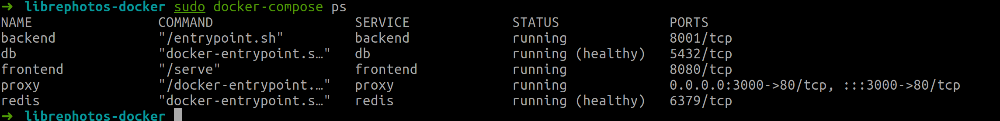
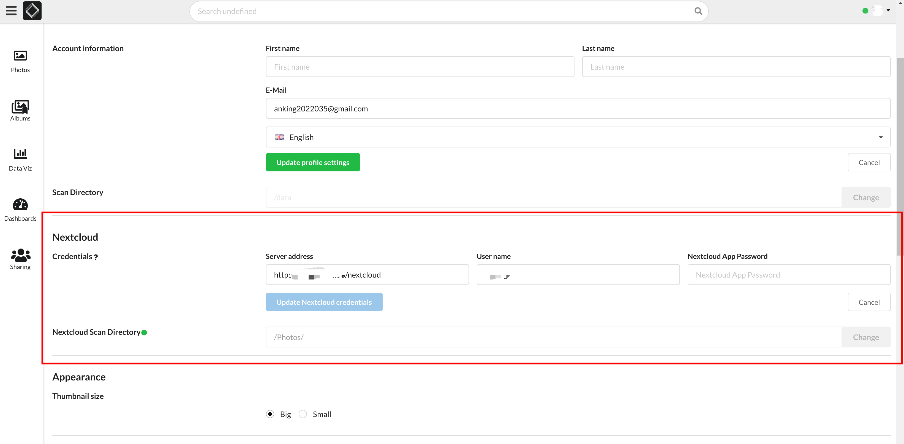
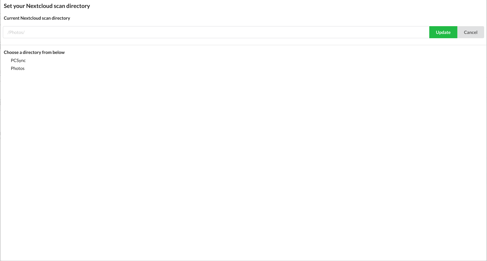
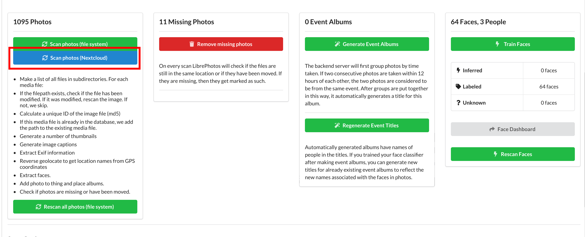

搭建私人照片服务器LibrePhotos
LibrePhotos简单介绍
LibrePhotos 将您的所有照片和数据保存在您的本地计算机上，您的数据永远不会发送或存储在第 3 方服务器上，在避免个人数据和隐私泄露的情况下获得与那些商业软件相似的服务体验。它具有以下特点：
1、支持所有类型的照片，包括raw，支持视频
2、具备时间线视图
3、扫描文件夹内的图片
4、支持多用户使用
5、可以生成照片专辑
6、人脸识别/人脸分类
7、支持地理编码
8、物体/场景检测
9、语义图像搜索
10、按元数据搜索
Docker方式安装
建议您使用 docker compose，因为它最适合演示和开发环境。需要 x86 或 ARM64 处理器，建议配备 4GB 内存。由于内存和处理能力有限，ARM64 不会那么快。将需要至少 10 GB 的 HDD 空间用于 docker 映像。由于机器学习模型，它需要那个空间。Librephotos 还将创建一个数据库和缩略图，这将需要额外的空间。
克隆仓库：
1
2git clone https://github.com/LibrePhotos/librephotos-docker.git
cd librephotos-docker复制模板变量文件（包含照片位置等选项）：
1
cp librephotos.env .env
修改其中的内容。主要需要在其中添加如下行：
1
2
3
4
5
6shhhKey=shadow # 密钥
adminEmail=your_email
userName=your_username
userPass=your_password
allowUpload=true
HEAVYWEIGHT_PROCESS=2在
.env文件中添加了shhhKey后直接运行还是会出现错误，因此需要修改docker-compose.yml文件：1
2
3
4
5
6
7
8
9
10
11
12
13
14
15
16
17
18
19
20
21
22
23
24
25
26
27
28
29
30
31
32
33
34
35
36
37
38
39
40
41
42
43
44
45
46
47
48
49
50
51
52
53
54
55
56
57
58
59
60
61
62
63
64
65
66
67
68
69
70
71
72
73
74
75
76
77
78
79
80
81
82
83
84
85
86
87
88
89
90
91
92# DO NOT EDIT
# The .env file has everything you need to edit.
# Run options:
# 1. Use prebuilt images (preferred method):
# run cmd: docker-compose up -d
# 2. Build images on your own machine:
# build cmd: COMPOSE_DOCKER_CLI_BUILD=1 DOCKER_BUILDKIT=1 docker-compose build
# run cmd: docker-compose up -d
version: "3.8"
services:
proxy:
image: reallibrephotos/librephotos-proxy:${tag}
container_name: proxy
restart: unless-stopped
volumes:
- ${scanDirectory}:/data
- ${data}/protected_media:/protected_media
ports:
- ${httpPort}:80
depends_on:
- backend
- frontend
db:
image: postgres:13
container_name: db
restart: unless-stopped
environment:
- POSTGRES_USER=${dbUser}
- POSTGRES_PASSWORD=${dbPass}
- POSTGRES_DB=${dbName}
volumes:
- ${data}/db:/var/lib/postgresql/data
command: postgres -c fsync=off -c synchronous_commit=off -c full_page_writes=off -c random_page_cost=1.0
healthcheck:
test: psql -U ${dbUser} -d ${dbName} -c "SELECT 1;"
interval: 5s
timeout: 5s
retries: 5
frontend:
image: reallibrephotos/librephotos-frontend:${tag}
container_name: frontend
restart: unless-stopped
backend:
image: reallibrephotos/librephotos:${tag}
container_name: backend
restart: unless-stopped
volumes:
- ${scanDirectory}:/data
- ${data}/protected_media:/protected_media
- ${data}/logs:/logs
- ${data}/cache:/root/.cache
environment:
# 将shhhKey修改为如下
- SECRET_KEY=${shhhhKey:-shadow934.}
- BACKEND_HOST=backend
- ADMIN_EMAIL=${adminEmail:-}
- ADMIN_USERNAME=${userName:-}
- ADMIN_PASSWORD=${userPass:-}
- DB_BACKEND=postgresql
- DB_NAME=${dbName}
- DB_USER=${dbUser}
- DB_PASS=${dbPass}
- DB_HOST=${dbHost}
- DB_PORT=5432
- REDIS_HOST=redis
- REDIS_PORT=6379
- MAPBOX_API_KEY=${mapApiKey:-}
- WEB_CONCURRENCY=${gunniWorkers:-1}
- SKIP_PATTERNS=${skipPatterns:-}
- ALLOW_UPLOAD=${allowUpload:-false}
- DEBUG=0
- HEAVYWEIGHT_PROCESS=${HEAVYWEIGHT_PROCESS:-}
depends_on:
db:
condition: service_healthy
redis:
condition: service_healthy
redis:
image: redis:6
container_name: redis
restart: unless-stopped
healthcheck:
test: [ "CMD", "redis-cli", "--raw", "incr", "ping" ]
interval: 5s
timeout: 5s
retries: 12接下来运行
docker-compose1
2sudo docker-compose down
sudo docker-compose -f docker-compose.yml up -d等待容器创建完成，验证容器正常运行：
1
sudo docker-compose ps

到此，LibrePhotos搭建完成，输入http://ip:端口 即可访问。
同步nextcloud中的照片
登陆LibrePhotos后，在此页面输入Nextcloud的服务器地址、用户名、密码信息，点击update Nextcloud crendentials

随后点击change，并选择需要同步照片的Nextcloud文件夹：
点击update 。
然后点击Scan photos

All articles in this blog are licensed under CC BY-NC-SA 4.0 unless stating additionally.